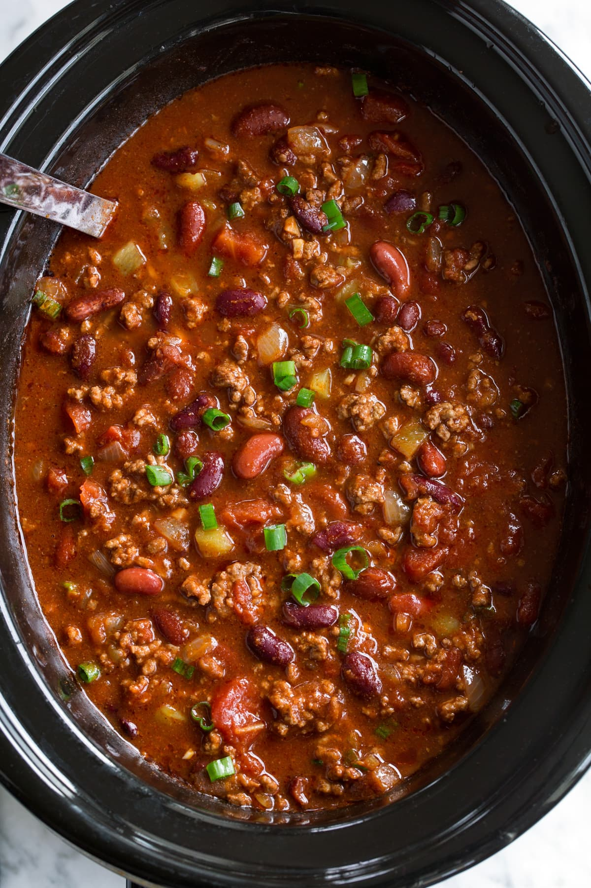

Slow Cooker Chili

Chili is a simple American dish that can be made even simpler by using a slow cooker. Put it in before work and it's ready after dinner!
The ingredients you'll need:
- 1 large Spanish Onion
- 1/3rd of a pound of ground beef
- 1/3rd of a pound of ground pork
- 8 cloves garlic
- Secret Spice Blend
- 2 28 oz cans red kidney beans
- 1 small can tomato paste
- 1 28oz can crushed tomatoes
- Small amount of red wine
Preparation:
- First, pour a tablespoon of oil into a frying pan and heat until shimmering
- While waiting, finely chop your onion
- Add onion to frying pan. Slowly fry under medium heat for around 20 minutes
- Then add the ground beef and pork, stirring together
- After all the ground meat is browned, add your spice mixture. Mine's a secret, but you can find great ones online!
- After only about 30 seconds to ensure the spices don't burn and turn bitter, take the pan off the stove and put the mixture in a greased slow cooker
- Deglaze the frying pan to ensure all juices and coat from the frying go into the slow cooker. I use wine for more flavour, but you can use water, stock, or any other liquid
- Dump all other ingredients into the slow cooker. Stir together well
- Put on high for 4 hours, or low for 8 hours. The longer, the better
Congratulations! You've easily made a weeks long dinner!
Click here to return to the main page!